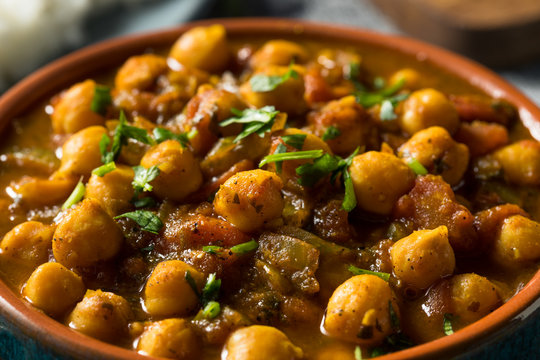

Chana Masala

Description
Chickpeas stewed with onions, tomatoes and indian spices. Serve with rice or naan bread.
Ingredients
- 1 large onion, chopped
- 2 cloves minced garlic
- 1 tablespoon olive oil
- 2 teaspoons grated fresh ginger
- 1 tablespoon ground cumin
- 1 teaspoon ground coriander
- 1 teaspoon garam masala
- 1 teaspoon ground tumeric
- 2 teaspoons paprika
- 1 green chili pepper, chopped
- 1/2 teaspoon ground cayenne pepper
- 1 lemon, juiced
- 1/2 cup plain yogurt
- 4 cups chopped tomatoes
- 4 cups cooked chickpeas
- 1/2 cup tomato sauce
- 1/2 teaspoon salt
Steps
- Heat oil in large saucepan over medium heat. Saute onions, garlic, ginger,and chili pepper until onions are translucent.
- Add paprika, cumin, tumeric, coriander, garam masala and cayenne pepper to pan and cook until mixture is fragrant.
- Combine tomato sauce, tomatoes and chickpeas; stir and simmer until tomatoes soften.
- Stir in yogurt and simmer for 5 minutes.
- Remove from heat; stir lemon juice and salt in mixture.
- Serve and enjoy!